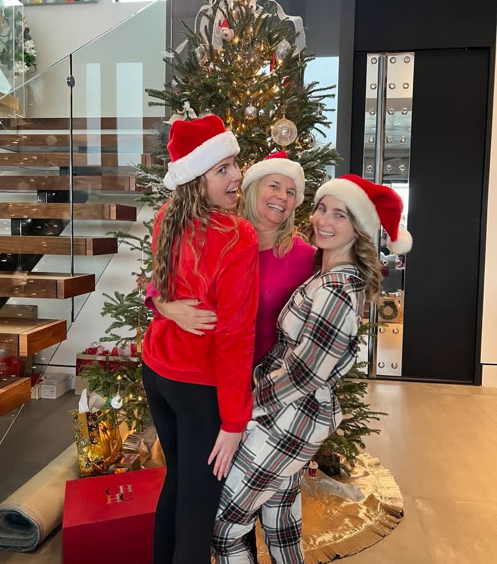
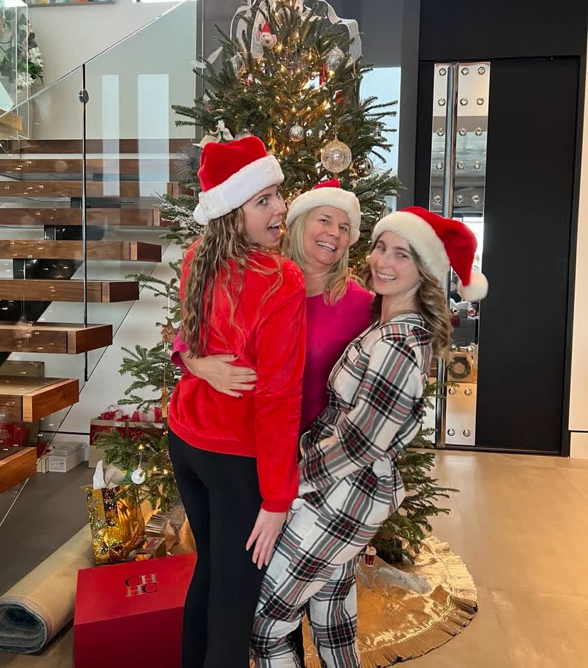

Important/Upcoming Dates
- December 4 - 9: Brenda and Eric come to Arizona
- December 22: Sidnee comes home for the holidays!
- January 18: Eric's work trip to New York
- March: Sami and Marcello are expecting their first child!!
Photos
 

Stories
Dig deeper into the history that is the Berch Branch of the family!
Sidnee gets a promotion!
Following her love of sports, Sidnee continues to work for the Cincinatti Bengals. She started
in the organization as an assistant, but is now the director of Social Media management and
works closely with the marketing department. She loves every moment of cheering on her Bengals,
despite the ups and downs of the season.
She started her career in sports at the Jacksonville Gladiators, an ECHL team in Georgia. She
soon moved up with that organization before she got the opportunity to work for the Bengals.
We are all so proud of her and can't wait to see what she does next!
Baby announcement!
Sami and Marcello are expecting their first child in March of 2026! The two of them are
over the moon excited to be parents and can't wait to meet their little one. We are all
so excited to welcome a new member to the Berch family!
The couple first told their immediate families before Brenda and Sami shared the news with
Nana and Papa. Not known for being able to keep secrets this big a secret, they were
thrilled and shared the news with the rest of the family in Arizona.
In October, Sami and Marcello announced their their first child is going to be a girl.
As Nate and Christian said, "Why aren't there more girls in the family!" as the two of them
are the only male grandchildren.